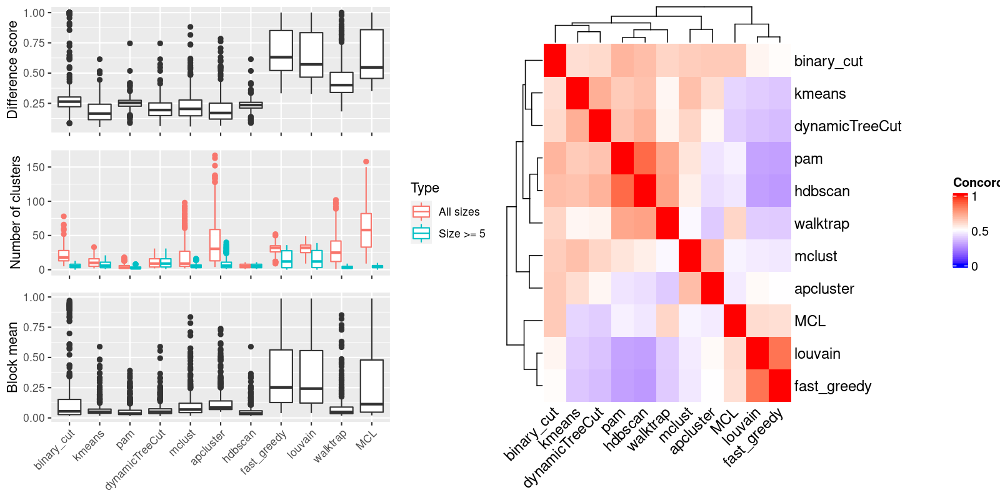

Figure 1.Compare clustering results. Left panel: The difference score, number of clusters and the block mean of different clusterings. Right panel: Concordance between clustering methods. The concordance measures how similar two clusterings are. The definition of the concordance score can be found here.

Table 1.Number of clusters identified by each clustering method. Numbers in the table indicate the number of clusters. The numbers inside the parentheses are the number of clusters with size >= 5.
| ID | binary_cut | kmeans | pam | dynamicTreeCut | mclust | apcluster | hdbscan | fast_greedy | louvain | walktrap | MCL | Details |
|---|---|---|---|---|---|---|---|---|---|---|---|---|
| E-GEOD-10311_A-AFFY-44_g6_g4 | 18(2) | 9(3) | 9(2) | 4(4) | 6(5) | 19(3) | 3(3) | 43(4) | 42(4) | 21(2) | 55(4) | view |
| E-GEOD-10718_A-AFFY-44_g4_g3 | 23(10) | 21(12) | 2(2) | 19(19) | 36(13) | 55(11) | 10(10) | 33(23) | 32(25) | 29(5) | 52(8) | view |
| E-GEOD-10718_A-AFFY-44_g5_g6 | 18(10) | 21(16) | 2(2) | 17(17) | 61(12) | 61(13) | 10(10) | 32(28) | 31(29) | 43(6) | 78(7) | view |
| E-GEOD-11285_A-AFFY-44_g1_g2 | 26(7) | 12(8) | 7(7) | 9(9) | 9(8) | 26(8) | 8(8) | 26(11) | 25(13) | 27(6) | 55(6) | view |
| E-GEOD-11285_A-AFFY-44_g3_g4 | 15(10) | 28(17) | 2(2) | 19(19) | 3(3) | 91(17) | 10(10) | 28(28) | 34(34) | 68(5) | 108(8) | view |
| E-GEOD-11324_A-AFFY-44_g1_g4 | 9(9) | 18(13) | 2(2) | 21(21) | 93(16) | 109(21) | 10(10) | 33(31) | 34(34) | 81(5) | 102(6) | view |
| E-GEOD-11352_A-AFFY-44_g1_g6 | 11(1) | 4(2) | 6(1) | 3(2) | 11(1) | 12(2) | 1(1) | 35(0) | 35(0) | 1(1) | 37(1) | view |
| E-GEOD-11352_A-AFFY-44_g3_g4 | 5(2) | 3(2) | 2(2) | 2(2) | 6(2) | 5(2) | 2(2) | 15(1) | 15(1) | 4(2) | 14(2) | view |
| E-GEOD-11408_A-AFFY-1_g1_g2 | 16(5) | 6(5) | 8(5) | 6(6) | 11(6) | 9(5) | 5(5) | 24(7) | 23(7) | 19(5) | 27(6) | view |
| E-GEOD-11791_A-AFFY-44_g3_g4 | 10(3) | 3(3) | 6(3) | 3(3) | 5(3) | 10(3) | 4(4) | 30(2) | 30(2) | 11(2) | 39(2) | view |
| E-GEOD-11903_A-AFFY-37_g7_g9 | 26(5) | 11(6) | 3(3) | 8(8) | 8(6) | 32(8) | 5(5) | 45(11) | 43(10) | 44(4) | 87(4) | view |
| E-GEOD-12355_A-AFFY-44_g11_g12 | 13(7) | 21(12) | 2(2) | 13(13) | 3(3) | 51(11) | 7(7) | 40(32) | 38(29) | 47(5) | 71(5) | view |
| E-GEOD-12513_A-AFFY-44_g4_g3 | 35(9) | 14(10) | 2(2) | 14(14) | 39(10) | 37(9) | 9(9) | 33(23) | 29(24) | 33(6) | 77(9) | view |
| E-GEOD-12773_A-AFFY-44_g1_g2 | 28(6) | 16(9) | 12(6) | 9(9) | 29(7) | 29(7) | 7(7) | 36(10) | 34(11) | 37(6) | 61(5) | view |
| E-GEOD-12791_A-AFFY-33_g3_g2 | 10(1) | 3(3) | 4(1) | 2(2) | 8(1) | 8(1) | 1(1) | 26(1) | 26(1) | 1(1) | 24(1) | view |
| E-GEOD-12886_A-AFFY-44_g1_g2 | 28(4) | 8(4) | 2(2) | 5(5) | 13(5) | 19(4) | 4(4) | 25(7) | 25(7) | 18(3) | 37(4) | view |
| E-GEOD-13274_A-AFFY-44_g1_g3 | 18(0) | 4(1) | 2(1) | 3(2) | 6(2) | 10(2) | 1(1) | 15(1) | 15(1) | 2(1) | 17(1) | view |
| E-GEOD-13637_A-AFFY-44_g1_g2 | 10(10) | 18(16) | 2(2) | 30(30) | 2(2) | 138(27) | 11(11) | 29(28) | 33(31) | 102(7) | 144(8) | view |
| E-GEOD-13637_A-AFFY-44_g5_g1 | 7(7) | 22(17) | 2(2) | 27(27) | 2(2) | 134(29) | 10(10) | 29(29) | 36(35) | 54(3) | 141(5) | view |
| E-GEOD-13637_A-AFFY-44_g5_g3 | 9(9) | 23(18) | 2(2) | 24(24) | 2(2) | 111(25) | 10(10) | 32(30) | 39(39) | 76(4) | 122(6) | view |
| E-GEOD-13762_A-AFFY-44_g3_g2 | 16(1) | 2(2) | 4(2) | 3(3) | 7(2) | 9(2) | 2(2) | 15(1) | 15(1) | 9(3) | 15(2) | view |
| E-GEOD-13763_A-AFFY-44_g1_g2 | 14(7) | 18(10) | 6(6) | 16(16) | 4(4) | 54(11) | 7(7) | 39(30) | 35(28) | 25(2) | 70(5) | view |
| E-GEOD-13763_A-AFFY-44_g1_g4 | 15(8) | 17(9) | 2(2) | 16(16) | 33(12) | 55(11) | 8(8) | 31(27) | 31(29) | 40(5) | 62(6) | view |
| E-GEOD-13763_A-AFFY-44_g3_g2 | 27(5) | 9(5) | 5(5) | 9(9) | 19(9) | 29(6) | 6(6) | 32(13) | 32(10) | 13(2) | 50(6) | view |
| E-GEOD-13763_A-AFFY-44_g3_g4 | 19(8) | 26(12) | 2(2) | 16(16) | 37(13) | 60(12) | 8(8) | 32(28) | 33(27) | 29(3) | 63(6) | view |
| E-GEOD-13909_A-AFFY-44_g3_g4 | 13(9) | 25(16) | 2(2) | 21(21) | 54(13) | 84(14) | 9(9) | 34(29) | 37(34) | 51(5) | 82(6) | view |
| E-GEOD-13987_A-AFFY-44_g5_g6 | 33(6) | 11(7) | 2(2) | 9(9) | 32(7) | 32(7) | 6(6) | 27(14) | 26(16) | 21(5) | 51(6) | view |
| E-GEOD-1417_A-AFFY-33_g1_g2 | 6(6) | 21(20) | 2(2) | 26(26) | 2(2) | 137(32) | 9(9) | 33(32) | 37(37) | 86(4) | 144(4) | view |
| E-GEOD-14580_A-AFFY-44_g2_g3 | 14(2) | 4(2) | 5(2) | 4(4) | 11(2) | 13(2) | 2(2) | 31(2) | 32(2) | 6(2) | 36(2) | view |
| E-GEOD-14905_A-AFFY-44_g3_g2 | 33(7) | 17(9) | 2(2) | 12(12) | 34(8) | 34(8) | 8(8) | 26(19) | 28(19) | 21(3) | 58(7) | view |
| E-GEOD-14995_A-AFFY-44_g1_g2 | 33(6) | 10(8) | 2(2) | 9(9) | 17(8) | 37(7) | 6(6) | 33(18) | 30(20) | 27(4) | 57(4) | view |
| E-GEOD-15799_A-AFFY-44_g1_g2 | 10(2) | 3(2) | 4(2) | 2(2) | 7(3) | 8(2) | 3(2) | 17(2) | 17(2) | 12(2) | 18(2) | view |
| E-GEOD-15811_A-AFFY-44_g1_g4 | 7(1) | 4(1) | 3(1) | 2(1) | 5(1) | 5(1) | 1(1) | 18(1) | 18(1) | 1(1) | 22(1) | view |
| E-GEOD-15893_A-AFFY-44_g3_g2 | 33(5) | 6(4) | 10(5) | 8(8) | 8(6) | 17(5) | 5(5) | 25(7) | 25(7) | 15(5) | 31(5) | view |
| E-GEOD-16179_A-AFFY-44_g1_g4 | 17(1) | 2(2) | 2(2) | 3(3) | 5(2) | 8(2) | 3(2) | 16(1) | 16(1) | 5(2) | 16(1) | view |
| E-GEOD-16238_A-AFFY-44_g2_g1 | 41(7) | 15(9) | 2(2) | 12(12) | 49(10) | 43(9) | 6(6) | 34(24) | 33(21) | 29(4) | 60(5) | view |
| E-GEOD-16837_A-AFFY-44_g22_g11 | 36(6) | 15(8) | 2(2) | 13(13) | 27(9) | 39(7) | 7(7) | 35(24) | 34(25) | 40(5) | 60(6) | view |
| E-GEOD-16837_A-AFFY-44_g22_g21 | 14(10) | 12(10) | 2(2) | 19(19) | 3(3) | 83(17) | 10(10) | 32(29) | 35(34) | 57(5) | 82(7) | view |
| E-GEOD-16837_A-AFFY-44_g22_g29 | 17(8) | 22(16) | 2(2) | 18(18) | 5(5) | 67(13) | 8(8) | 32(30) | 37(34) | 56(4) | 79(5) | view |
| E-GEOD-16837_A-AFFY-44_g22_g3 | 14(7) | 18(10) | 2(2) | 13(13) | 4(4) | 41(8) | 7(7) | 32(21) | 32(22) | 43(4) | 57(5) | view |
| E-GEOD-16837_A-AFFY-44_g22_g4 | 27(5) | 15(8) | 5(5) | 11(11) | 29(7) | 30(7) | 6(6) | 35(13) | 36(13) | 25(4) | 49(6) | view |
| E-GEOD-16879_A-AFFY-44_g13_g1 | 14(5) | 10(6) | 8(5) | 6(6) | 9(5) | 8(5) | 5(5) | 24(6) | 21(6) | 12(4) | 32(5) | view |
| E-GEOD-16879_A-AFFY-44_g13_g12 | 14(3) | 7(4) | 6(3) | 4(4) | 13(3) | 14(3) | 3(3) | 29(2) | 29(2) | 11(3) | 34(2) | view |
| E-GEOD-17156_A-AFFY-37_g4_g10 | 15(0) | 4(1) | 2(1) | 3(2) | 5(2) | 7(1) | 1(1) | 14(0) | 14(0) | 8(1) | 15(0) | view |
| E-GEOD-17508_A-AFFY-44_g1_g2 | 12(4) | 7(4) | 4(4) | 4(4) | 8(5) | 12(4) | 4(4) | 23(4) | 23(4) | 21(4) | 32(3) | view |
| E-GEOD-18791_A-AFFY-44_g11_g2 | 22(1) | 10(3) | 7(1) | 4(3) | 11(2) | 15(2) | 1(1) | 32(2) | 32(2) | 1(1) | 34(2) | view |
| E-GEOD-18791_A-AFFY-44_g11_g6 | 10(1) | 4(2) | 3(1) | 4(3) | 13(2) | 11(2) | 1(1) | 42(1) | 42(1) | 1(1) | 35(1) | view |
| E-GEOD-19018_A-AFFY-44_g1_g3 | 40(9) | 10(9) | 2(2) | 13(13) | 43(9) | 43(10) | 9(9) | 30(24) | 29(24) | 20(4) | 55(7) | view |
| E-GEOD-19018_A-AFFY-44_g2_g1 | 9(9) | 27(19) | 2(2) | 25(25) | 2(2) | 105(27) | 10(10) | 34(31) | 35(32) | 70(5) | 104(7) | view |
| E-GEOD-19018_A-AFFY-44_g2_g4 | 16(9) | 24(15) | 2(2) | 20(20) | 4(4) | 69(13) | 8(8) | 34(28) | 38(34) | 45(3) | 85(6) | view |
| E-GEOD-19249_A-AFFY-37_g6_g5 | 10(2) | 3(1) | 2(2) | 3(3) | 6(2) | 6(2) | 2(2) | 18(1) | 18(1) | 11(2) | 20(1) | view |
| E-GEOD-19639_A-AFFY-44_g2_g8 | 22(0) | 3(1) | 2(1) | 2(1) | 4(1) | 7(1) | 1(1) | 22(0) | 22(0) | 4(1) | 22(0) | view |
| E-GEOD-19639_A-AFFY-44_g6_g4 | 23(4) | 15(5) | 13(4) | 8(8) | 24(5) | 24(5) | 5(5) | 33(8) | 31(8) | 18(4) | 43(5) | view |
| E-GEOD-19639_A-AFFY-44_g7_g5 | 12(9) | 14(12) | 2(2) | 17(17) | 37(12) | 64(14) | 9(9) | 29(25) | 31(30) | 38(4) | 67(6) | view |
| E-GEOD-20505_A-AFFY-44_g7_g4 | 25(3) | 3(3) | 2(2) | 6(6) | 27(4) | 27(5) | 3(3) | 34(7) | 31(8) | 35(3) | 62(3) | view |
| E-GEOD-20505_A-AFFY-44_g7_g5 | 35(2) | 12(4) | 2(2) | 5(5) | 18(3) | 18(3) | 2(2) | 28(4) | 28(5) | 16(2) | 37(2) | view |
| E-GEOD-21422_A-AFFY-44_g3_g1 | 13(8) | 18(10) | 2(2) | 14(14) | 48(10) | 48(12) | 8(8) | 32(26) | 33(24) | 35(4) | 67(7) | view |
| E-GEOD-21422_A-AFFY-44_g3_g2 | 36(8) | 14(11) | 18(6) | 13(13) | 8(8) | 39(7) | 7(7) | 35(19) | 33(20) | 27(6) | 58(7) | view |
| E-GEOD-21610_A-AFFY-44_g5_g1 | 15(2) | 7(3) | 2(2) | 4(4) | 8(4) | 18(3) | 2(2) | 37(3) | 36(3) | 15(2) | 41(2) | view |
| E-GEOD-22139_A-AFFY-44_g6_g3 | 18(4) | 7(5) | 4(4) | 6(6) | 5(5) | 19(5) | 5(5) | 37(7) | 35(5) | 25(4) | 54(4) | view |
| E-GEOD-22385_A-AFFY-37_g1_g2 | 28(5) | 6(6) | 4(4) | 9(9) | 27(6) | 27(4) | 5(4) | 34(12) | 32(11) | 21(3) | 48(5) | view |
| E-GEOD-22611_A-AFFY-44_g1_g6 | 21(1) | 5(1) | 5(1) | 3(2) | 11(1) | 12(2) | 1(1) | 37(0) | 37(0) | 4(1) | 38(1) | view |
| E-GEOD-22611_A-AFFY-44_g2_g3 | 18(1) | 8(1) | 4(1) | 2(1) | 10(1) | 12(2) | 1(1) | 32(0) | 32(0) | 1(1) | 34(1) | view |
| E-GEOD-22611_A-AFFY-44_g9_g4 | 8(1) | 6(1) | 5(1) | 3(2) | 5(1) | 7(1) | 1(1) | 32(0) | 32(0) | 1(1) | 32(1) | view |
| E-GEOD-23610_A-AFFY-44_g1_g2 | 12(1) | 3(1) | 4(1) | 3(2) | 8(1) | 9(2) | 1(1) | 28(0) | 28(0) | 1(1) | 30(0) | view |
| E-GEOD-23764_A-AFFY-44_g4_g1 | 18(9) | 15(13) | 2(2) | 16(16) | 4(4) | 60(11) | 9(9) | 34(28) | 35(28) | 31(4) | 62(6) | view |
| E-GEOD-23764_A-AFFY-44_g4_g2 | 16(7) | 19(10) | 2(2) | 14(14) | 4(4) | 57(11) | 7(7) | 34(31) | 36(32) | 36(4) | 53(5) | view |
| E-GEOD-23930_A-AGIL-28_g1_g2 | 13(2) | 4(3) | 4(3) | 3(3) | 8(3) | 5(3) | 3(3) | 15(2) | 15(2) | 15(2) | 16(2) | view |
| E-GEOD-23930_A-AGIL-28_g2_g4 | 21(6) | 8(6) | 11(5) | 8(8) | 10(6) | 23(7) | 6(5) | 32(9) | 31(9) | 16(3) | 58(5) | view |
| E-GEOD-24592_A-AFFY-37_g1_g3 | 13(8) | 15(11) | 2(2) | 22(22) | 5(5) | 86(17) | 8(8) | 32(31) | 31(29) | 50(3) | 84(6) | view |
| E-GEOD-24592_A-AFFY-37_g2_g6 | 15(1) | 4(2) | 2(2) | 2(2) | 5(2) | 6(2) | 2(2) | 13(1) | 13(1) | 4(1) | 12(1) | view |
| E-GEOD-24592_A-AFFY-37_g4_g3 | 33(7) | 12(8) | 4(4) | 11(11) | 35(6) | 38(6) | 6(6) | 37(19) | 35(19) | 43(5) | 77(6) | view |
| E-GEOD-24592_A-AFFY-37_g6_g5 | 39(6) | 10(7) | 4(4) | 11(11) | 11(7) | 43(7) | 6(6) | 38(16) | 35(17) | 32(5) | 56(6) | view |
| E-GEOD-26370_A-AFFY-37_g4_g3 | 13(1) | 5(2) | 3(2) | 2(2) | 6(3) | 8(2) | 2(2) | 12(2) | 12(2) | 9(2) | 11(2) | view |
| E-GEOD-26656_A-AFFY-44_g3_g1 | 46(6) | 12(8) | 2(2) | 12(12) | 33(8) | 49(8) | 5(5) | 35(23) | 36(25) | 26(3) | 72(4) | view |
| E-GEOD-26656_A-AFFY-44_g4_g2 | 17(5) | 9(8) | 2(2) | 11(11) | 4(4) | 55(9) | 5(5) | 37(32) | 38(33) | 33(3) | 83(4) | view |
| E-GEOD-29137_A-AFFY-44_g4_g1 | 17(8) | 10(9) | 2(2) | 13(13) | 44(9) | 48(8) | 7(7) | 30(25) | 29(24) | 34(4) | 62(5) | view |
| E-GEOD-29137_A-AFFY-44_g4_g2 | 21(2) | 8(3) | 8(2) | 3(3) | 5(5) | 22(3) | 2(2) | 38(2) | 37(2) | 15(2) | 41(3) | view |
| E-GEOD-29137_A-AFFY-44_g4_g3 | 37(6) | 7(5) | 5(5) | 11(11) | 39(8) | 39(6) | 6(6) | 38(15) | 36(15) | 35(5) | 70(6) | view |
| E-GEOD-29598_A-AFFY-37_g4_g3 | 40(3) | 4(3) | 7(3) | 5(5) | 10(6) | 19(3) | 3(3) | 30(7) | 29(7) | 17(3) | 52(4) | view |
| E-GEOD-30448_A-AFFY-141_g1_g2 | 32(2) | 4(3) | 7(3) | 5(5) | 13(3) | 14(3) | 3(3) | 20(4) | 20(4) | 16(3) | 28(4) | view |
| E-GEOD-30531_A-AFFY-44_g4_g9 | 43(8) | 15(11) | 6(6) | 16(16) | 30(11) | 47(9) | 7(7) | 31(23) | 31(20) | 38(4) | 71(5) | view |
| E-GEOD-30784_A-AFFY-44_g2_g1 | 33(3) | 4(3) | 8(3) | 4(4) | 16(4) | 17(3) | 3(3) | 27(5) | 27(5) | 14(3) | 33(3) | view |
| E-GEOD-31193_A-AFFY-44_g2_g5 | 19(7) | 24(15) | 5(5) | 15(15) | 5(5) | 54(9) | 7(7) | 41(28) | 38(28) | 37(3) | 71(5) | view |
| E-GEOD-32876_A-AFFY-44_g1_g2 | 9(9) | 25(16) | 2(2) | 23(23) | 2(2) | 96(20) | 10(10) | 31(26) | 34(32) | 64(4) | 112(8) | view |
| E-GEOD-3307_A-AFFY-34_g14_g15 | 9(9) | 23(15) | 2(2) | 19(19) | 81(15) | 82(18) | 10(10) | 32(29) | 33(31) | 59(4) | 100(8) | view |
| E-GEOD-3307_A-AFFY-34_g14_g20 | 9(9) | 18(16) | 2(2) | 25(25) | 2(2) | 137(33) | 10(10) | 31(28) | 34(34) | 50(3) | 134(5) | view |
| E-GEOD-3307_A-AFFY-34_g14_g24 | 7(7) | 18(17) | 2(2) | 28(28) | 2(2) | 167(40) | 11(11) | 30(29) | 31(31) | 65(6) | 150(5) | view |
| E-GEOD-3307_A-AFFY-34_g14_g25 | 9(9) | 14(13) | 2(2) | 26(26) | 2(2) | 132(34) | 10(10) | 30(29) | 36(34) | 87(5) | 119(5) | view |
| E-GEOD-33950_A-AFFY-44_g1_g2 | 9(9) | 19(15) | 2(2) | 20(20) | 82(14) | 81(19) | 10(10) | 34(29) | 38(33) | 66(5) | 88(7) | view |
| E-GEOD-34635_A-AFFY-44_g1_g5 | 27(2) | 9(4) | 2(1) | 7(6) | 5(4) | 38(4) | 1(1) | 52(10) | 49(11) | 1(1) | 74(3) | view |
| E-GEOD-35006_A-AFFY-44_g2_g1 | 25(3) | 6(4) | 2(2) | 4(4) | 7(4) | 26(4) | 3(3) | 32(8) | 32(8) | 14(3) | 40(3) | view |
| E-GEOD-35006_A-AFFY-44_g4_g3 | 28(3) | 12(6) | 2(2) | 7(7) | 15(7) | 31(5) | 3(3) | 31(17) | 32(16) | 13(3) | 46(5) | view |
| E-GEOD-35006_A-AFFY-44_g6_g5 | 11(3) | 5(4) | 2(2) | 3(3) | 16(5) | 12(4) | 3(3) | 23(4) | 23(4) | 10(3) | 29(3) | view |
| E-GEOD-35198_A-AFFY-44_g2_g1 | 29(5) | 14(6) | 12(4) | 9(9) | 31(5) | 32(6) | 5(5) | 33(15) | 31(14) | 17(3) | 47(5) | view |
| E-GEOD-36035_A-AFFY-141_g4_g2 | 28(5) | 6(6) | 2(2) | 8(8) | 10(6) | 33(7) | 5(5) | 31(17) | 30(17) | 27(4) | 75(4) | view |
| E-GEOD-36076_A-AFFY-44_g3_g2 | 18(8) | 16(11) | 2(2) | 16(16) | 4(4) | 57(11) | 8(8) | 33(31) | 32(31) | 42(3) | 82(6) | view |
| E-GEOD-3678_A-AFFY-44_g1_g2 | 27(3) | 12(7) | 3(3) | 7(7) | 2(2) | 31(5) | 4(3) | 46(12) | 44(12) | 26(3) | 74(5) | view |
| E-GEOD-37258_A-AFFY-44_g3_g2 | 18(2) | 12(3) | 10(2) | 5(4) | 18(1) | 20(2) | 1(1) | 42(6) | 41(6) | 1(1) | 33(4) | view |
| E-GEOD-37571_A-AGIL-28_g18_g9 | 15(1) | 3(2) | 2(2) | 2(2) | 4(2) | 9(2) | 2(2) | 15(1) | 15(1) | 13(2) | 15(1) | view |
| E-GEOD-37911_A-AFFY-141_g3_g1 | 22(5) | 7(6) | 11(5) | 7(7) | 23(6) | 22(5) | 5(5) | 26(7) | 24(8) | 22(5) | 43(5) | view |
| E-GEOD-37911_A-AFFY-141_g3_g2 | 29(5) | 9(6) | 2(2) | 9(9) | 29(6) | 29(6) | 5(5) | 29(13) | 28(14) | 16(3) | 42(7) | view |
| E-GEOD-39121_g1_g2 | 12(2) | 3(3) | 2(2) | 2(2) | 8(2) | 9(2) | 2(2) | 21(1) | 21(1) | 10(2) | 22(1) | view |
| E-GEOD-39843_A-AFFY-44_g2_g1 | 20(2) | 5(3) | 4(3) | 3(3) | 5(3) | 4(3) | 3(3) | 14(3) | 14(3) | 13(3) | 18(3) | view |
| E-GEOD-40613_A-AFFY-44_g4_g3 | 28(6) | 7(6) | 2(2) | 8(8) | 30(6) | 29(5) | 5(5) | 28(12) | 26(13) | 22(4) | 49(5) | view |
| E-GEOD-40885_A-AFFY-44_g2_g1 | 33(3) | 4(3) | 4(4) | 5(5) | 5(4) | 4(4) | 4(4) | 22(4) | 22(4) | 25(4) | 32(3) | view |
| E-GEOD-40968_A-AFFY-44_g6_g5 | 8(4) | 6(5) | 6(4) | 6(6) | 20(6) | 20(5) | 5(5) | 27(6) | 27(6) | 11(3) | 33(5) | view |
| E-GEOD-40986_A-AFFY-44_g2_g1 | 23(2) | 8(4) | 2(2) | 6(6) | 10(6) | 24(3) | 2(2) | 39(6) | 39(7) | 12(2) | 37(5) | view |
| E-GEOD-41326_A-AFFY-44_g1_g2 | 17(9) | 17(15) | 2(2) | 14(14) | 60(13) | 60(11) | 9(9) | 33(28) | 32(28) | 37(4) | 81(7) | view |
| E-GEOD-41405_A-AFFY-141_g1_g6 | 13(2) | 5(3) | 3(3) | 3(3) | 6(3) | 5(3) | 3(3) | 13(2) | 13(2) | 12(2) | 12(2) | view |
| E-GEOD-41586_g3_g1 | 43(5) | 8(6) | 4(4) | 7(7) | 11(7) | 31(6) | 5(5) | 35(10) | 33(12) | 34(3) | 64(5) | view |
| E-GEOD-41678_A-AFFY-141_g14_g12 | 15(3) | 8(3) | 7(3) | 4(4) | 14(3) | 15(3) | 3(3) | 28(3) | 27(3) | 15(3) | 31(2) | view |
| E-GEOD-41678_A-AFFY-141_g22_g20 | 8(2) | 5(2) | 2(2) | 2(2) | 9(2) | 8(2) | 2(2) | 24(1) | 24(1) | 8(2) | 27(1) | view |
| E-GEOD-43552_A-AFFY-44_g2_g1 | 30(7) | 7(6) | 2(2) | 10(10) | 31(7) | 33(7) | 7(7) | 27(15) | 23(14) | 20(4) | 52(7) | view |
| E-GEOD-44097_A-AFFY-44_g1_g2 | 21(4) | 6(5) | 7(4) | 5(5) | 14(4) | 14(4) | 4(4) | 23(4) | 23(5) | 15(4) | 29(4) | view |
| E-GEOD-44379_g2_g1 | 5(1) | 5(1) | 2(1) | 2(1) | 6(2) | 5(1) | 1(1) | 22(0) | 22(0) | 1(1) | 23(0) | view |
| E-GEOD-45757_A-AFFY-37_g21_g20 | 18(2) | 7(4) | 7(2) | 5(5) | 9(5) | 17(2) | 2(2) | 24(3) | 23(3) | 10(2) | 31(2) | view |
| E-GEOD-45757_A-AFFY-37_g43_g42 | 22(2) | 4(3) | 5(3) | 4(4) | 7(4) | 7(3) | 3(3) | 18(3) | 18(3) | 11(3) | 17(4) | view |
| E-GEOD-4600_A-AFFY-44_g2_g1 | 9(9) | 27(16) | 2(2) | 22(22) | 86(14) | 91(18) | 10(10) | 31(29) | 37(36) | 50(5) | 76(7) | view |
| E-GEOD-46490_g1_g2 | 36(6) | 11(7) | 5(5) | 9(9) | 36(6) | 38(7) | 6(6) | 36(12) | 34(13) | 39(5) | 77(4) | view |
| E-GEOD-46590_A-AFFY-141_g1_g2 | 8(2) | 4(2) | 4(2) | 2(2) | 5(2) | 8(2) | 2(2) | 18(2) | 18(2) | 6(2) | 20(2) | view |
| E-GEOD-46884_A-AFFY-37_g5_g4 | 12(1) | 2(2) | 3(2) | 2(2) | 6(2) | 7(2) | 3(2) | 11(1) | 11(1) | 7(2) | 12(1) | view |
| E-GEOD-47739_A-AFFY-141_g2_g1 | 14(3) | 4(4) | 4(4) | 4(4) | 8(4) | 6(4) | 4(4) | 12(3) | 12(3) | 12(3) | 12(3) | view |
| E-GEOD-48121_A-AFFY-37_g3_g2 | 42(6) | 12(10) | 14(6) | 9(9) | 6(6) | 41(7) | 7(7) | 33(17) | 33(16) | 35(5) | 72(6) | view |
| E-GEOD-48258_A-AFFY-44_g3_g2 | 16(3) | 5(4) | 8(3) | 4(4) | 16(3) | 16(3) | 3(3) | 31(5) | 30(6) | 14(3) | 37(3) | view |
| E-GEOD-48350_A-AFFY-44_g6_g2 | 19(1) | 15(5) | 12(1) | 6(5) | 6(3) | 22(4) | 1(1) | 50(4) | 49(3) | 1(1) | 57(2) | view |
| E-GEOD-48433_A-AFFY-44_g161_g162 | 33(8) | 6(6) | 17(7) | 12(12) | 13(9) | 32(9) | 7(7) | 25(17) | 24(17) | 27(5) | 50(8) | view |
| E-GEOD-48433_A-AFFY-44_g161_g163 | 15(1) | 6(2) | 7(1) | 3(2) | 14(1) | 16(2) | 1(1) | 42(1) | 42(1) | 11(1) | 47(1) | view |
| E-GEOD-48433_A-AFFY-44_g48_g50 | 27(6) | 7(6) | 6(6) | 10(10) | 28(7) | 28(7) | 7(6) | 36(12) | 35(12) | 28(5) | 62(6) | view |
| E-GEOD-48786_A-AFFY-44_g2_g1 | 40(5) | 16(8) | 4(4) | 11(11) | 7(6) | 43(6) | 5(5) | 36(18) | 33(22) | 25(3) | 63(4) | view |
| E-GEOD-48937_A-AFFY-141_g1_g3 | 10(1) | 4(2) | 2(2) | 2(2) | 5(2) | 6(2) | 2(2) | 10(1) | 10(1) | 8(1) | 9(1) | view |
| E-GEOD-49284_A-AFFY-44_g13_g1 | 33(6) | 7(6) | 2(2) | 12(12) | 35(7) | 34(7) | 7(7) | 29(18) | 29(16) | 27(5) | 59(7) | view |
| E-GEOD-49284_A-AFFY-44_g23_g27 | 9(9) | 24(17) | 2(2) | 22(22) | 89(14) | 92(21) | 10(10) | 31(30) | 35(34) | 62(4) | 98(7) | view |
| E-GEOD-49284_A-AFFY-44_g31_g35 | 15(10) | 12(11) | 2(2) | 22(22) | 77(15) | 76(16) | 10(10) | 30(29) | 31(30) | 63(5) | 91(8) | view |
| E-GEOD-49515_A-AFFY-44_g3_g2 | 18(8) | 28(12) | 2(2) | 16(16) | 4(4) | 57(11) | 8(8) | 33(31) | 32(31) | 42(3) | 82(6) | view |
| E-GEOD-50693_A-AFFY-37_g1_g2 | 30(3) | 10(6) | 3(3) | 9(9) | 9(5) | 30(4) | 3(3) | 41(11) | 38(11) | 30(3) | 62(3) | view |
| E-GEOD-50693_A-AFFY-37_g1_g4 | 45(6) | 17(9) | 5(5) | 14(14) | 29(10) | 46(8) | 7(7) | 35(25) | 37(23) | 39(3) | 83(6) | view |
| E-GEOD-50693_A-AFFY-37_g5_g4 | 43(7) | 13(8) | 18(6) | 15(15) | 47(8) | 46(8) | 7(7) | 38(24) | 36(22) | 38(5) | 60(5) | view |
| E-GEOD-50694_A-AFFY-37_g5_g4 | 8(8) | 20(18) | 2(2) | 27(27) | 2(2) | 123(24) | 10(10) | 29(28) | 34(33) | 92(7) | 132(7) | view |
| E-GEOD-50697_A-AFFY-44_g1_g2 | 7(1) | 4(2) | 2(1) | 2(1) | 7(1) | 7(1) | 1(1) | 23(0) | 23(0) | 1(1) | 24(1) | view |
| E-GEOD-51258_A-AFFY-44_g1_g2 | 9(9) | 24(21) | 2(2) | 26(26) | 2(2) | 116(31) | 10(10) | 31(31) | 37(35) | 98(6) | 115(5) | view |
| E-GEOD-51261_g3_g1 | 8(2) | 4(2) | 3(2) | 2(2) | 3(2) | 5(2) | 2(2) | 21(1) | 21(1) | 11(2) | 21(1) | view |
| E-GEOD-51704_A-AFFY-44_g12_g11 | 30(6) | 13(8) | 2(2) | 9(9) | 35(8) | 33(6) | 5(5) | 31(21) | 30(21) | 22(4) | 62(4) | view |
| E-GEOD-51878_g1_g2 | 14(6) | 16(10) | 2(2) | 11(11) | 37(9) | 56(11) | 7(7) | 34(27) | 35(25) | 25(3) | 65(5) | view |
| E-GEOD-52127_A-AFFY-44_g1_g2 | 10(1) | 5(1) | 2(1) | 3(2) | 3(3) | 7(1) | 1(1) | 21(0) | 21(0) | 1(1) | 22(0) | view |
| E-GEOD-52687_g3_g1 | 8(8) | 16(13) | 2(2) | 23(23) | 98(12) | 103(19) | 9(9) | 35(34) | 36(36) | 70(5) | 117(6) | view |
| E-GEOD-52778_g4_g3 | 14(9) | 32(17) | 3(3) | 18(18) | 78(13) | 77(15) | 9(9) | 34(31) | 34(32) | 72(5) | 104(6) | view |
| E-GEOD-52989_A-AFFY-33_g1_g2 | 41(6) | 13(9) | 2(2) | 12(12) | 3(3) | 42(7) | 7(6) | 31(21) | 29(19) | 41(5) | 69(6) | view |
| E-GEOD-53280_g2_g1 | 20(9) | 22(14) | 2(2) | 17(17) | 3(3) | 54(11) | 9(9) | 33(29) | 34(29) | 42(5) | 69(7) | view |
| E-GEOD-53284_A-AFFY-141_g2_g1 | 19(2) | 7(4) | 11(2) | 5(5) | 8(4) | 20(3) | 2(2) | 36(6) | 35(5) | 12(2) | 38(3) | view |
| E-GEOD-5370_A-AFFY-33_g2_g1 | 18(7) | 17(12) | 2(2) | 16(16) | 4(4) | 62(10) | 7(7) | 34(29) | 36(33) | 41(3) | 90(5) | view |
| E-GEOD-54846_g1_g2 | 15(7) | 11(10) | 2(2) | 18(18) | 41(12) | 61(11) | 7(6) | 36(29) | 36(31) | 49(5) | 93(5) | view |
| E-GEOD-55193_g1_g3 | 20(7) | 17(10) | 2(2) | 15(15) | 59(10) | 59(9) | 6(6) | 34(27) | 29(24) | 51(6) | 82(6) | view |
| E-GEOD-55282_g4_g5 | 8(4) | 6(6) | 2(2) | 7(7) | 22(5) | 21(5) | 5(4) | 25(9) | 26(12) | 15(3) | 34(4) | view |
| E-GEOD-56003_A-AFFY-141_g2_g1 | 30(7) | 15(9) | 13(5) | 11(11) | 33(6) | 33(6) | 6(6) | 31(12) | 29(12) | 32(4) | 57(6) | view |
| E-GEOD-56517_A-AGIL-28_g4_g8 | 15(1) | 6(3) | 2(1) | 5(4) | 7(3) | 19(2) | 1(1) | 45(2) | 45(2) | 1(1) | 55(1) | view |
| E-GEOD-56579_A-AGIL-28_g1_g2 | 43(4) | 11(5) | 12(4) | 6(6) | 11(6) | 24(5) | 5(5) | 32(9) | 31(8) | 23(3) | 47(6) | view |
| E-GEOD-56678_A-AGIL-28_g5_g2 | 20(8) | 14(10) | 2(2) | 17(17) | 6(6) | 49(10) | 8(8) | 30(25) | 29(24) | 36(5) | 66(6) | view |
| E-GEOD-56678_A-AGIL-28_g6_g3 | 23(2) | 5(4) | 3(3) | 3(3) | 6(3) | 10(3) | 3(3) | 19(3) | 19(3) | 17(2) | 21(2) | view |
| E-GEOD-56681_A-AFFY-33_g6_g5 | 6(2) | 5(2) | 2(2) | 3(3) | 3(2) | 6(2) | 2(2) | 18(1) | 18(1) | 11(2) | 17(1) | view |
| E-GEOD-56691_g4_g3 | 13(1) | 4(2) | 2(2) | 2(2) | 3(2) | 7(2) | 2(2) | 11(1) | 11(1) | 4(2) | 12(1) | view |
| E-GEOD-56788_g2_g10 | 45(10) | 19(12) | 6(6) | 19(19) | 61(11) | 60(10) | 8(8) | 36(28) | 38(29) | 50(5) | 126(9) | view |
| E-GEOD-56788_g2_g12 | 7(7) | 17(15) | 2(2) | 31(31) | 2(2) | 134(26) | 10(10) | 28(27) | 32(32) | 39(4) | 138(6) | view |
| E-GEOD-56788_g2_g14 | 20(8) | 27(12) | 7(7) | 15(15) | 50(9) | 53(9) | 8(8) | 37(28) | 35(28) | 56(5) | 81(5) | view |
| E-GEOD-56788_g2_g15 | 40(10) | 19(14) | 2(2) | 17(17) | 52(12) | 57(11) | 9(9) | 32(27) | 31(27) | 58(4) | 90(7) | view |
| E-GEOD-56788_g2_g6 | 23(10) | 17(12) | 2(2) | 20(20) | 68(11) | 67(11) | 10(10) | 33(28) | 31(27) | 52(5) | 91(8) | view |
| E-GEOD-56788_g2_g7 | 38(8) | 14(9) | 5(5) | 11(11) | 6(6) | 39(9) | 8(8) | 33(18) | 29(19) | 48(6) | 90(7) | view |
| E-GEOD-56788_g2_g8 | 19(8) | 14(12) | 2(2) | 12(12) | 9(9) | 53(12) | 9(9) | 31(21) | 32(23) | 36(4) | 79(9) | view |
| E-GEOD-5681_A-AFFY-37_g4_g3 | 10(2) | 5(4) | 5(2) | 3(3) | 10(2) | 10(2) | 2(2) | 30(3) | 30(3) | 11(2) | 32(2) | view |
| E-GEOD-56825_A-AFFY-141_g1_g3 | 45(9) | 20(13) | 2(2) | 15(15) | 47(9) | 45(8) | 8(7) | 32(24) | 28(21) | 53(4) | 87(7) | view |
| E-GEOD-56825_A-AFFY-141_g1_g5 | 25(5) | 16(6) | 5(5) | 8(8) | 14(6) | 26(6) | 5(5) | 32(12) | 29(15) | 30(4) | 58(5) | view |
| E-GEOD-5741_A-AFFY-44_g1_g3 | 16(7) | 15(12) | 2(2) | 17(17) | 60(8) | 60(11) | 7(7) | 40(32) | 37(30) | 41(3) | 100(5) | view |
| E-GEOD-57463_A-AFFY-44_g2_g1 | 9(9) | 23(14) | 2(2) | 26(26) | 2(2) | 128(30) | 10(10) | 31(30) | 34(34) | 96(6) | 116(6) | view |
| E-GEOD-57494_g2_g5 | 44(5) | 18(10) | 4(4) | 8(8) | 4(4) | 47(8) | 5(5) | 35(25) | 32(25) | 31(4) | 65(4) | view |
| E-GEOD-57896_g5_g9 | 17(2) | 3(3) | 3(3) | 3(3) | 4(3) | 4(3) | 3(3) | 16(2) | 16(2) | 12(3) | 17(2) | view |
| E-GEOD-57896_g6_g8 | 12(2) | 4(3) | 2(2) | 3(3) | 10(2) | 12(2) | 2(2) | 29(1) | 29(1) | 17(3) | 31(1) | view |
| E-GEOD-58379_g1_g2 | 14(2) | 6(3) | 2(2) | 4(4) | 14(2) | 15(2) | 2(2) | 40(3) | 40(3) | 12(2) | 46(2) | view |
| E-GEOD-58966_g2_g5 | 22(9) | 12(10) | 2(2) | 18(18) | 60(13) | 59(11) | 9(8) | 35(27) | 34(30) | 42(4) | 87(7) | view |
| E-GEOD-58966_g3_g6 | 58(7) | 15(8) | 5(5) | 11(11) | 45(7) | 46(7) | 6(6) | 30(13) | 28(12) | 15(3) | 111(8) | view |
| E-GEOD-59089_g1_g3 | 20(5) | 7(6) | 10(5) | 7(7) | 8(7) | 20(6) | 5(5) | 25(9) | 23(9) | 24(5) | 34(6) | view |
| E-GEOD-59251_g2_g4 | 44(3) | 12(6) | 13(3) | 8(8) | 28(4) | 27(4) | 4(4) | 35(11) | 33(10) | 23(3) | 47(5) | view |
| E-GEOD-59765_g1_g3 | 43(5) | 12(8) | 14(5) | 11(11) | 26(7) | 29(5) | 5(5) | 34(9) | 32(9) | 33(5) | 52(7) | view |
| E-GEOD-60052_g1_g2 | 31(4) | 7(5) | 8(4) | 5(5) | 19(4) | 20(4) | 5(5) | 23(8) | 21(8) | 15(3) | 47(4) | view |
| E-GEOD-60340_g7_g4 | 7(7) | 24(14) | 2(2) | 18(18) | 5(5) | 87(19) | 8(8) | 34(29) | 36(34) | 65(4) | 100(6) | view |
| E-GEOD-60424_g31_g32 | 8(3) | 4(3) | 3(3) | 3(3) | 8(3) | 5(3) | 3(3) | 11(3) | 11(3) | 6(3) | 15(2) | view |
| E-GEOD-60888_A-AFFY-44_g4_g3 | 21(8) | 22(13) | 7(7) | 16(16) | 5(5) | 61(10) | 8(8) | 39(32) | 40(31) | 41(5) | 79(6) | view |
| E-GEOD-61130_g3_g2 | 43(5) | 8(7) | 13(5) | 7(7) | 24(6) | 24(6) | 6(5) | 27(12) | 25(12) | 21(5) | 47(6) | view |
| E-GEOD-61705_A-AFFY-141_g2_g1 | 18(1) | 5(2) | 4(2) | 2(2) | 4(2) | 11(2) | 2(2) | 15(1) | 15(1) | 12(2) | 17(1) | view |
| E-GEOD-61966_g3_g5 | 50(9) | 16(10) | 7(7) | 14(14) | 54(9) | 54(8) | 8(8) | 30(20) | 30(20) | 32(5) | 75(6) | view |
| E-GEOD-62854_g2_g1 | 29(5) | 6(5) | 11(5) | 9(9) | 8(6) | 30(6) | 6(5) | 26(8) | 27(9) | 21(4) | 54(4) | view |
| E-GEOD-65335_g2_g1 | 32(4) | 12(4) | 13(4) | 6(6) | 26(5) | 23(5) | 4(4) | 36(7) | 35(8) | 21(4) | 52(4) | view |
| E-GEOD-66048_A-AFFY-37_g14_g16 | 18(3) | 7(4) | 4(4) | 4(4) | 8(4) | 5(4) | 4(4) | 13(3) | 13(3) | 10(3) | 15(3) | view |
| E-GEOD-66048_A-AFFY-37_g4_g5 | 19(7) | 22(11) | 2(2) | 16(16) | 3(3) | 68(11) | 7(7) | 41(36) | 38(29) | 43(3) | 84(5) | view |
| E-GEOD-66493_A-AFFY-141_g2_g1 | 18(8) | 14(11) | 2(2) | 17(17) | 2(2) | 69(12) | 8(8) | 31(27) | 34(31) | 59(4) | 91(6) | view |
| E-GEOD-66493_A-AFFY-141_g2_g3 | 17(3) | 9(2) | 9(3) | 5(5) | 6(6) | 18(4) | 3(3) | 36(6) | 35(6) | 22(3) | 44(4) | view |
| E-GEOD-66493_A-AFFY-141_g2_g4 | 35(7) | 17(11) | 13(5) | 11(11) | 5(5) | 39(7) | 6(6) | 34(19) | 32(19) | 28(3) | 72(6) | view |
| E-GEOD-6802_A-AFFY-37_g1_g3 | 29(6) | 9(5) | 4(4) | 8(8) | 36(6) | 32(6) | 6(6) | 33(18) | 33(18) | 31(5) | 54(6) | view |
| E-GEOD-68919_g2_g1 | 13(7) | 15(11) | 2(2) | 19(19) | 74(9) | 74(11) | 7(7) | 36(33) | 31(27) | 51(3) | 96(5) | view |
| E-GEOD-6907_A-AFFY-41_g1_g10 | 16(1) | 6(2) | 4(2) | 3(3) | 7(3) | 10(2) | 2(2) | 14(2) | 14(2) | 11(3) | 14(2) | view |
| E-GEOD-7114_A-AFFY-1_g2_g1 | 13(0) | 2(1) | 3(1) | 2(1) | 5(2) | 8(1) | 1(1) | 11(1) | 11(1) | 8(2) | 12(1) | view |
| E-GEOD-71289_g8_g5 | 15(4) | 8(5) | 6(4) | 5(5) | 8(4) | 14(4) | 5(4) | 29(7) | 27(8) | 22(3) | 46(4) | view |
| E-GEOD-71404_A-AFFY-44_g10_g7 | 9(3) | 4(3) | 2(2) | 3(3) | 6(4) | 10(4) | 3(3) | 23(4) | 22(5) | 17(3) | 34(3) | view |
| E-GEOD-71595_g2_g1 | 18(1) | 6(1) | 3(1) | 3(2) | 6(2) | 10(1) | 1(1) | 30(1) | 30(1) | 1(1) | 31(2) | view |
| E-GEOD-7216_A-AFFY-44_g1_g3 | 6(2) | 5(2) | 2(2) | 2(2) | 3(3) | 6(2) | 2(2) | 19(1) | 19(1) | 8(2) | 22(1) | view |
| E-GEOD-7216_A-AFFY-44_g1_g4 | 25(5) | 9(8) | 2(2) | 9(9) | 15(7) | 25(6) | 6(6) | 25(15) | 27(10) | 23(4) | 58(5) | view |
| E-GEOD-7216_A-AFFY-44_g1_g6 | 34(2) | 4(2) | 2(2) | 4(4) | 13(3) | 15(2) | 2(2) | 32(2) | 32(3) | 20(2) | 33(3) | view |
| E-GEOD-7515_A-AFFY-44_g1_g2 | 20(7) | 16(9) | 2(2) | 13(13) | 3(3) | 45(9) | 7(7) | 35(26) | 34(22) | 40(5) | 63(5) | view |
| E-GEOD-75797_g4_g3 | 21(10) | 16(12) | 2(2) | 17(17) | 63(11) | 65(11) | 9(9) | 32(28) | 30(26) | 67(8) | 97(9) | view |
| E-GEOD-7835_A-AFFY-44_g1_g5 | 15(10) | 17(14) | 2(2) | 22(22) | 2(2) | 82(18) | 10(10) | 30(26) | 33(33) | 55(5) | 87(7) | view |
| E-GEOD-8597_A-AFFY-44_g2_g1 | 12(4) | 5(4) | 4(4) | 6(6) | 5(4) | 4(4) | 5(4) | 12(3) | 11(4) | 8(3) | 9(3) | view |
| E-GEOD-8597_A-AFFY-44_g4_g3 | 19(1) | 4(3) | 5(1) | 5(5) | 8(3) | 20(2) | 1(1) | 34(3) | 34(3) | 3(1) | 40(4) | view |
| E-GEOD-8961_A-AFFY-44_g2_g6 | 9(9) | 20(14) | 2(2) | 23(23) | 2(2) | 90(20) | 10(10) | 33(32) | 37(35) | 60(4) | 103(7) | view |
| E-GEOD-9764_A-AFFY-44_g3_g2 | 19(0) | 4(1) | 2(1) | 3(2) | 3(1) | 6(1) | 1(1) | 18(0) | 18(0) | 1(1) | 19(0) | view |
| E-MEXP-1103_A-AFFY-44_g1_g3 | 19(3) | 4(4) | 4(4) | 4(4) | 4(4) | 4(4) | 4(4) | 16(3) | 15(3) | 10(4) | 18(3) | view |
| E-MEXP-1230_A-AFFY-44_g2_g1 | 21(2) | 5(3) | 3(3) | 4(4) | 9(3) | 11(3) | 3(3) | 17(2) | 17(2) | 6(2) | 18(2) | view |
| E-MEXP-1230_A-AFFY-44_g2_g3 | 18(8) | 16(11) | 2(2) | 14(14) | 45(11) | 49(9) | 8(8) | 31(24) | 28(24) | 35(4) | 66(6) | view |
| E-MEXP-1274_A-AFFY-37_g3_g1 | 6(1) | 3(1) | 3(1) | 2(1) | 6(1) | 6(1) | 1(1) | 25(0) | 25(0) | 1(1) | 26(0) | view |
| E-MEXP-1274_A-AFFY-37_g4_g2 | 14(5) | 12(7) | 2(2) | 10(10) | 51(5) | 51(9) | 4(4) | 36(29) | 38(27) | 34(3) | 77(3) | view |
| E-MEXP-1372_A-AFFY-44_g4_g2 | 7(7) | 19(16) | 2(2) | 27(27) | 2(2) | 152(37) | 10(10) | 30(29) | 34(33) | 35(4) | 131(4) | view |
| E-MEXP-1509_A-AFFY-37_g1_g2 | 12(10) | 24(17) | 2(2) | 22(22) | 3(3) | 89(19) | 10(10) | 29(28) | 31(30) | 70(5) | 97(7) | view |
| E-MEXP-1509_A-AFFY-37_g1_g3 | 19(3) | 4(3) | 3(3) | 3(3) | 6(3) | 11(3) | 3(3) | 28(3) | 27(4) | 12(3) | 34(2) | view |
| E-MEXP-1599_A-AFFY-44_g4_g3 | 22(10) | 18(10) | 2(2) | 18(18) | 65(12) | 64(11) | 10(10) | 33(29) | 33(33) | 38(5) | 81(8) | view |
| E-MEXP-2115_A-AFFY-44_g2_g1 | 8(8) | 20(13) | 2(2) | 23(23) | 92(15) | 89(16) | 9(9) | 34(32) | 39(36) | 64(4) | 98(7) | view |
| E-MEXP-2218_A-AFFY-44_g4_g2 | 14(10) | 18(13) | 2(2) | 20(20) | 52(16) | 76(14) | 10(10) | 35(31) | 36(34) | 51(6) | 92(7) | view |
| E-MEXP-3521_A-AFFY-33_g4_g1 | 10(3) | 5(3) | 5(3) | 3(3) | 10(3) | 10(3) | 3(3) | 23(3) | 23(3) | 16(3) | 24(2) | view |
| E-MEXP-3521_A-AFFY-33_g4_g3 | 21(1) | 3(1) | 4(2) | 3(3) | 7(2) | 8(2) | 2(2) | 19(2) | 19(2) | 11(2) | 20(1) | view |
| E-MEXP-3777_A-AFFY-141_g1_g2 | 9(2) | 3(2) | 2(2) | 2(2) | 9(2) | 10(3) | 2(2) | 23(3) | 22(3) | 11(2) | 31(1) | view |
| E-MEXP-3778_A-AFFY-141_g1_g2 | 35(3) | 5(4) | 6(4) | 4(4) | 11(4) | 7(4) | 4(4) | 23(6) | 22(6) | 14(4) | 29(4) | view |
| E-MEXP-548_A-AFFY-33_g1_g2 | 42(8) | 8(8) | 2(2) | 13(13) | 5(5) | 42(9) | 7(7) | 33(24) | 33(23) | 39(5) | 71(6) | view |
| E-MEXP-548_A-AFFY-33_g1_g3 | 16(7) | 13(9) | 2(2) | 15(15) | 54(9) | 64(11) | 7(7) | 39(31) | 38(33) | 59(5) | 86(5) | view |
| E-MEXP-560_A-AFFY-37_g2_g1 | 18(9) | 16(13) | 2(2) | 15(15) | 38(12) | 58(11) | 9(9) | 31(26) | 33(29) | 30(4) | 81(7) | view |
| E-MEXP-563_A-AFFY-44_g1_g4 | 23(4) | 5(5) | 2(2) | 8(8) | 26(5) | 24(5) | 5(4) | 29(9) | 30(8) | 15(3) | 36(4) | view |
| E-MEXP-563_A-AFFY-44_g1_g5 | 16(2) | 10(3) | 2(2) | 4(4) | 8(3) | 16(2) | 2(2) | 25(5) | 24(5) | 11(2) | 35(1) | view |
| E-MEXP-858_A-AFFY-44_g1_g5 | 8(8) | 26(18) | 2(2) | 25(25) | 2(2) | 108(22) | 9(9) | 33(32) | 36(32) | 56(3) | 105(6) | view |
| E-MTAB-1900_A-AFFY-141_g7_g3 | 19(6) | 7(7) | 6(6) | 8(8) | 21(7) | 15(7) | 7(6) | 24(8) | 22(8) | 22(5) | 38(6) | view |
| E-MTAB-2746_A-AFFY-33_g1_g2 | 31(4) | 19(7) | 12(4) | 11(11) | 38(6) | 31(5) | 4(4) | 38(17) | 36(16) | 32(4) | 58(6) | view |
| E-MTAB-2758_g3_g7 | 14(5) | 7(5) | 5(5) | 6(6) | 11(6) | 7(5) | 5(5) | 19(5) | 19(5) | 12(4) | 22(4) | view |
| E-MTAB-2994_A-GEOD-16686_g3_g1 | 9(9) | 19(15) | 2(2) | 26(26) | 2(2) | 107(25) | 10(10) | 32(28) | 32(30) | 81(4) | 122(7) | view |
| E-MTAB-3101_g2_g1 | 12(8) | 28(17) | 2(2) | 19(19) | 2(2) | 77(14) | 8(8) | 35(32) | 37(34) | 70(5) | 97(6) | view |
| E-MTAB-3295_A-AFFY-141_g1_g2 | 30(3) | 7(4) | 9(3) | 4(4) | 5(5) | 15(3) | 3(3) | 27(5) | 26(5) | 30(3) | 42(3) | view |
| E-MTAB-3447_g4_g1 | 17(6) | 8(6) | 10(6) | 6(6) | 20(7) | 16(6) | 6(6) | 27(9) | 27(9) | 20(4) | 44(5) | view |
| E-MTAB-3447_g5_g3 | 9(9) | 25(18) | 2(2) | 26(26) | 3(3) | 118(27) | 10(10) | 31(30) | 31(31) | 43(3) | 126(5) | view |
| E-MTAB-3645_A-AFFY-141_g1_g5 | 23(9) | 10(7) | 12(8) | 10(10) | 25(9) | 17(9) | 9(9) | 29(15) | 28(15) | 36(6) | 62(8) | view |
| E-MTAB-3645_A-AFFY-141_g2_g6 | 13(3) | 6(4) | 7(3) | 4(4) | 14(4) | 13(3) | 3(3) | 24(4) | 24(4) | 9(2) | 26(3) | view |
| E-MTAB-3645_A-AFFY-141_g4_g8 | 46(7) | 16(10) | 2(2) | 15(15) | 47(7) | 47(7) | 6(6) | 30(24) | 29(22) | 45(5) | 69(5) | view |
| E-MTAB-3731_A-AFFY-33_g1_g10 | 8(8) | 19(17) | 2(2) | 20(20) | 2(2) | 98(18) | 9(9) | 33(31) | 34(33) | 59(5) | 93(6) | view |
| E-MTAB-3731_A-AFFY-33_g1_g16 | 19(8) | 18(11) | 7(7) | 19(19) | 4(4) | 57(11) | 8(8) | 33(30) | 34(28) | 37(3) | 84(6) | view |
| E-MTAB-3731_A-AFFY-33_g1_g24 | 19(6) | 24(14) | 2(2) | 17(17) | 3(3) | 74(12) | 6(5) | 42(34) | 37(33) | 50(3) | 104(5) | view |
| E-MTAB-3731_A-AFFY-33_g2_g11 | 14(5) | 20(12) | 4(4) | 13(13) | 5(5) | 58(10) | 6(5) | 37(31) | 40(28) | 46(5) | 91(4) | view |
| E-MTAB-3731_A-AFFY-33_g2_g17 | 27(5) | 12(7) | 5(5) | 9(9) | 8(7) | 30(6) | 5(5) | 36(16) | 35(16) | 24(4) | 59(5) | view |
| E-MTAB-3731_A-AFFY-33_g34_g44 | 28(1) | 15(6) | 8(1) | 6(6) | 29(2) | 30(3) | 1(1) | 42(7) | 42(7) | 1(1) | 69(4) | view |
| E-MTAB-3731_A-AFFY-33_g35_g45 | 22(1) | 12(2) | 8(1) | 3(2) | 9(3) | 20(1) | 1(1) | 36(2) | 35(2) | 2(1) | 43(2) | view |
| E-MTAB-3731_A-AFFY-33_g35_g55 | 16(5) | 28(8) | 3(3) | 13(13) | 59(9) | 63(12) | 5(5) | 42(34) | 44(33) | 57(3) | 104(4) | view |
| E-MTAB-3731_A-AFFY-33_g37_g47 | 15(5) | 9(7) | 5(5) | 14(14) | 4(4) | 56(7) | 6(6) | 37(31) | 38(28) | 37(5) | 80(5) | view |
| E-MTAB-3731_A-AFFY-33_g37_g57 | 16(6) | 13(7) | 6(6) | 14(14) | 48(9) | 46(8) | 7(7) | 42(26) | 44(22) | 36(4) | 89(6) | view |
| E-MTAB-3731_A-AFFY-33_g37_g67 | 18(2) | 3(2) | 2(2) | 4(4) | 9(5) | 18(2) | 2(2) | 35(3) | 34(3) | 17(2) | 41(3) | view |
| E-MTAB-3731_A-AFFY-33_g39_g49 | 20(8) | 16(10) | 7(7) | 19(19) | 67(11) | 68(10) | 8(8) | 37(31) | 39(31) | 57(5) | 80(7) | view |
| E-MTAB-3731_A-AFFY-33_g39_g59 | 12(9) | 18(14) | 2(2) | 18(18) | 71(14) | 72(16) | 9(9) | 35(31) | 38(34) | 56(4) | 95(6) | view |
| E-MTAB-3731_A-AFFY-33_g39_g69 | 12(9) | 21(15) | 2(2) | 18(18) | 2(2) | 77(15) | 9(9) | 33(30) | 34(30) | 64(5) | 104(6) | view |
| E-MTAB-3731_A-AFFY-33_g3_g18 | 17(4) | 9(5) | 4(4) | 6(6) | 6(6) | 18(5) | 4(4) | 38(7) | 38(7) | 22(4) | 41(5) | view |
| E-MTAB-3731_A-AFFY-33_g3_g25 | 17(8) | 10(10) | 7(7) | 15(15) | 6(6) | 53(11) | 7(7) | 38(33) | 37(31) | 38(3) | 86(6) | view |
| E-MTAB-3731_A-AFFY-33_g4_g12 | 13(8) | 33(15) | 3(3) | 19(19) | 3(3) | 76(14) | 8(8) | 41(34) | 42(36) | 81(5) | 120(6) | view |
| E-MTAB-3731_A-AFFY-33_g4_g19 | 21(9) | 19(15) | 8(8) | 19(19) | 3(3) | 67(11) | 9(9) | 36(30) | 38(33) | 33(4) | 81(7) | view |
| E-MTAB-3731_A-AFFY-33_g6_g21 | 31(2) | 5(4) | 2(2) | 8(8) | 9(6) | 34(4) | 2(2) | 39(12) | 40(13) | 13(2) | 59(4) | view |
| E-MTAB-3731_A-AFFY-33_g6_g27 | 19(8) | 13(10) | 2(2) | 18(18) | 6(6) | 65(9) | 8(8) | 35(27) | 32(27) | 39(4) | 82(6) | view |
| E-MTAB-3731_A-AFFY-33_g76_g105 | 47(6) | 10(6) | 6(6) | 14(14) | 49(7) | 49(8) | 6(6) | 40(25) | 39(26) | 36(4) | 76(6) | view |
| E-MTAB-3731_A-AFFY-33_g76_g86 | 19(0) | 4(2) | 3(1) | 3(2) | 3(2) | 6(1) | 1(1) | 19(0) | 19(0) | 5(1) | 19(0) | view |
| E-MTAB-3731_A-AFFY-33_g77_g106 | 37(3) | 22(6) | 2(2) | 9(9) | 8(6) | 43(5) | 2(2) | 50(13) | 43(14) | 4(1) | 87(4) | view |
| E-MTAB-3731_A-AFFY-33_g77_g87 | 28(4) | 4(3) | 2(2) | 7(7) | 3(3) | 32(4) | 2(2) | 47(8) | 44(8) | 28(2) | 77(2) | view |
| E-MTAB-3731_A-AFFY-33_g77_g96 | 38(6) | 13(7) | 5(5) | 12(12) | 9(8) | 40(6) | 6(6) | 36(20) | 34(18) | 36(4) | 71(6) | view |
| E-MTAB-3731_A-AFFY-33_g78_g107 | 34(4) | 6(4) | 11(4) | 8(8) | 20(6) | 27(5) | 5(4) | 40(11) | 38(10) | 21(4) | 57(4) | view |
| E-MTAB-3731_A-AFFY-33_g78_g97 | 10(7) | 13(10) | 2(2) | 17(17) | 44(9) | 72(14) | 7(7) | 37(34) | 37(34) | 49(3) | 94(5) | view |
| E-MTAB-3731_A-AFFY-33_g7_g15 | 10(7) | 21(13) | 6(6) | 18(18) | 3(3) | 68(11) | 7(7) | 41(36) | 39(36) | 54(3) | 102(5) | view |
| E-MTAB-3731_A-AFFY-33_g7_g22 | 18(6) | 12(8) | 3(3) | 13(13) | 4(4) | 61(9) | 6(6) | 41(31) | 40(31) | 43(3) | 97(5) | view |
| E-MTAB-3731_A-AFFY-33_g7_g28 | 15(6) | 21(9) | 3(3) | 14(14) | 5(5) | 54(10) | 6(6) | 42(25) | 40(28) | 30(3) | 82(4) | view |
| E-MTAB-3731_A-AFFY-33_g80_g109 | 33(4) | 10(6) | 2(2) | 9(9) | 13(6) | 37(7) | 5(4) | 46(14) | 45(14) | 32(3) | 79(4) | view |
| E-MTAB-3731_A-AFFY-33_g80_g89 | 46(6) | 11(7) | 4(4) | 11(11) | 4(4) | 52(10) | 6(6) | 39(27) | 39(26) | 28(3) | 90(4) | view |
| E-MTAB-3731_A-AFFY-33_g80_g99 | 32(2) | 8(4) | 2(2) | 4(4) | 19(4) | 21(3) | 2(2) | 43(3) | 41(3) | 16(2) | 44(3) | view |
| E-MTAB-3731_A-AFFY-33_g82_g101 | 27(3) | 9(6) | 2(2) | 7(7) | 8(8) | 29(4) | 3(3) | 44(11) | 43(8) | 25(3) | 66(6) | view |
| E-MTAB-3731_A-AFFY-33_g82_g111 | 28(4) | 9(5) | 2(2) | 8(8) | 7(7) | 32(4) | 3(3) | 46(7) | 46(7) | 27(3) | 71(4) | view |
| E-MTAB-3731_A-AFFY-33_g8_g29 | 20(9) | 24(13) | 2(2) | 16(16) | 6(6) | 60(10) | 7(7) | 30(28) | 34(29) | 49(5) | 89(7) | view |
| E-MTAB-3731_A-AFFY-33_g9_g30 | 16(6) | 18(10) | 5(5) | 12(12) | 45(9) | 48(9) | 6(6) | 44(28) | 40(29) | 54(4) | 79(4) | view |
| E-MTAB-3801_g2_g1 | 40(3) | 22(9) | 2(2) | 11(11) | 30(5) | 44(5) | 3(3) | 37(20) | 37(23) | 32(3) | 71(3) | view |
| E-MTAB-4023_A-AFFY-141_g2_g1 | 32(7) | 9(6) | 15(6) | 9(9) | 31(7) | 31(7) | 7(6) | 25(14) | 26(13) | 23(5) | 46(7) | view |
| E-MTAB-4152_A-AFFY-141_g3_g1 | 18(1) | 2(1) | 2(1) | 3(2) | 7(1) | 8(1) | 1(1) | 21(0) | 21(0) | 6(1) | 23(0) | view |
| E-MTAB-454_A-AFFY-33_g17_g18 | 13(2) | 6(2) | 7(2) | 4(4) | 8(3) | 13(2) | 2(2) | 31(3) | 30(3) | 7(2) | 28(3) | view |
| E-MTAB-4732_g2_g1 | 9(9) | 19(16) | 2(2) | 25(25) | 4(4) | 124(24) | 10(10) | 34(33) | 38(38) | 76(4) | 119(5) | view |
| E-MTAB-4898_A-AFFY-141_g1_g2 | 27(4) | 14(5) | 10(3) | 6(6) | 22(4) | 22(4) | 3(3) | 37(7) | 32(8) | 35(3) | 80(4) | view |
| E-MTAB-5067_A-AFFY-44_g2_g1 | 18(8) | 18(11) | 3(3) | 17(17) | 56(11) | 59(10) | 8(8) | 36(31) | 38(33) | 43(5) | 79(6) | view |
| E-MTAB-5219_A-AFFY-141_g1_g4 | 15(1) | 3(1) | 2(1) | 2(1) | 5(1) | 5(1) | 1(1) | 20(0) | 20(0) | 5(1) | 20(0) | view |
| E-MTAB-5235_A-AFFY-44_g2_g1 | 14(6) | 18(11) | 2(2) | 14(14) | 46(7) | 48(7) | 6(6) | 39(24) | 37(23) | 45(4) | 65(5) | view |
| E-MTAB-5262_A-AFFY-141_g4_g3 | 22(2) | 4(3) | 2(2) | 3(3) | 3(3) | 9(3) | 2(2) | 24(3) | 24(3) | 19(2) | 31(2) | view |
| E-MTAB-5285_g4_g1 | 12(2) | 5(2) | 4(2) | 2(2) | 8(2) | 10(2) | 2(2) | 16(1) | 16(1) | 4(2) | 18(1) | view |
| E-MTAB-5285_g4_g3 | 32(7) | 9(7) | 15(6) | 11(11) | 33(8) | 34(7) | 7(7) | 27(12) | 25(11) | 33(5) | 52(8) | view |
| E-MTAB-6008_A-MEXP-2320_g8_g4 | 10(4) | 5(4) | 7(4) | 4(4) | 5(4) | 10(4) | 4(4) | 26(4) | 26(4) | 13(3) | 33(4) | view |
| E-MTAB-6045_A-GEOD-16686_g14_g5 | 23(3) | 7(4) | 2(2) | 5(5) | 11(5) | 25(5) | 3(3) | 44(6) | 44(7) | 20(2) | 48(2) | view |
| E-MTAB-6045_A-GEOD-16686_g16_g7 | 9(1) | 3(1) | 2(1) | 2(1) | 5(1) | 6(1) | 1(1) | 18(0) | 18(0) | 1(1) | 20(0) | view |
| E-MTAB-6045_A-GEOD-16686_g9_g5 | 10(3) | 3(3) | 4(3) | 3(3) | 4(3) | 4(3) | 3(3) | 15(2) | 15(2) | 5(2) | 16(2) | view |
| E-MTAB-6087_g12_g11 | 11(3) | 4(4) | 3(3) | 4(4) | 6(3) | 5(4) | 4(4) | 9(3) | 9(3) | 9(3) | 10(3) | view |
| E-MTAB-6235_g5_g1 | 7(4) | 6(5) | 4(4) | 5(5) | 8(4) | 4(4) | 4(4) | 9(4) | 9(4) | 9(4) | 12(3) | view |
| E-MTAB-6264_g3_g2 | 29(3) | 4(4) | 6(4) | 4(4) | 12(4) | 8(4) | 4(4) | 21(4) | 21(4) | 18(4) | 28(4) | view |
| E-MTAB-6298_g12_g10 | 21(9) | 15(11) | 2(2) | 20(20) | 5(5) | 69(13) | 9(9) | 31(28) | 35(31) | 42(4) | 71(6) | view |
| E-MTAB-6298_g12_g11 | 19(2) | 13(5) | 2(2) | 5(5) | 11(3) | 22(3) | 2(2) | 48(4) | 44(4) | 14(2) | 60(2) | view |
| E-MTAB-6298_g9_g7 | 12(9) | 18(13) | 2(2) | 18(18) | 72(13) | 72(13) | 9(9) | 36(32) | 34(32) | 45(4) | 79(6) | view |
| E-MTAB-6298_g9_g8 | 12(1) | 3(1) | 5(1) | 4(3) | 9(1) | 12(1) | 1(1) | 30(0) | 30(0) | 1(1) | 33(0) | view |
| E-MTAB-6345_g1_g2 | 9(9) | 15(14) | 2(2) | 24(24) | 2(2) | 100(18) | 10(10) | 32(31) | 32(31) | 73(7) | 98(7) | view |
| E-MTAB-6491_A-AFFY-44_g2_g1 | 23(5) | 9(6) | 11(5) | 6(6) | 12(7) | 17(5) | 5(5) | 27(8) | 25(7) | 13(4) | 33(5) | view |
| E-MTAB-6555_g1_g2 | 25(6) | 10(8) | 14(5) | 8(8) | 13(8) | 29(7) | 6(6) | 36(15) | 34(14) | 25(4) | 52(6) | view |
| E-MTAB-6556_g1_g3 | 16(3) | 4(3) | 3(3) | 4(4) | 8(3) | 9(3) | 4(3) | 16(3) | 16(3) | 7(3) | 15(3) | view |
| E-MTAB-6556_g2_g3 | 30(5) | 11(6) | 3(3) | 9(9) | 24(6) | 37(6) | 4(4) | 38(16) | 38(16) | 40(4) | 73(5) | view |
| E-MTAB-6607_g2_g1 | 36(8) | 23(10) | 16(7) | 12(12) | 28(9) | 39(7) | 7(7) | 33(22) | 31(22) | 36(5) | 65(7) | view |
| E-MTAB-6607_g2_g3 | 23(5) | 8(5) | 11(5) | 8(8) | 27(6) | 24(6) | 5(5) | 33(11) | 30(12) | 18(4) | 48(6) | view |
| E-MTAB-6623_g5_g1 | 16(10) | 28(15) | 2(2) | 23(23) | 3(3) | 74(12) | 10(10) | 32(28) | 31(30) | 58(7) | 99(9) | view |
| E-MTAB-6623_g5_g2 | 7(7) | 31(19) | 2(2) | 27(27) | 6(6) | 109(15) | 8(8) | 33(32) | 36(33) | 72(4) | 117(7) | view |
| E-MTAB-6623_g5_g3 | 9(9) | 15(12) | 2(2) | 25(25) | 2(2) | 94(14) | 10(10) | 31(28) | 32(31) | 57(8) | 87(9) | view |
| E-MTAB-6623_g5_g4 | 9(9) | 26(14) | 2(2) | 22(22) | 89(12) | 88(14) | 10(10) | 27(25) | 29(27) | 59(6) | 102(10) | view |
| E-MTAB-6647_g11_g12 | 29(3) | 6(3) | 12(3) | 8(8) | 10(10) | 29(3) | 4(4) | 37(7) | 36(7) | 22(4) | 64(4) | view |
| E-MTAB-6647_g8_g6 | 13(3) | 6(4) | 6(3) | 4(4) | 8(3) | 12(3) | 3(3) | 20(3) | 19(3) | 13(2) | 24(3) | view |
| E-MTAB-6681_g3_g1 | 16(2) | 3(2) | 2(2) | 2(2) | 5(2) | 9(2) | 2(2) | 21(1) | 21(1) | 10(2) | 25(1) | view |
| E-MTAB-6681_g4_g2 | 52(7) | 10(6) | 5(5) | 11(11) | 48(7) | 45(7) | 5(5) | 37(18) | 33(19) | 55(5) | 99(8) | view |
| E-MTAB-6681_g6_g3 | 21(9) | 17(13) | 2(2) | 18(18) | 63(11) | 63(11) | 10(10) | 33(27) | 28(24) | 59(9) | 92(8) | view |
| E-MTAB-6681_g6_g4 | 66(13) | 22(16) | 2(2) | 26(26) | 2(2) | 114(21) | 11(11) | 29(27) | 29(29) | 89(6) | 135(9) | view |
| E-MTAB-6848_A-AFFY-141_g2_g4 | 6(3) | 3(3) | 4(2) | 3(3) | 7(2) | 7(2) | 2(2) | 19(1) | 19(1) | 14(2) | 18(2) | view |
| E-MTAB-6849_g2_g1 | 38(5) | 9(6) | 6(4) | 6(6) | 24(5) | 24(5) | 5(5) | 36(9) | 35(9) | 28(3) | 53(4) | view |
| E-MTAB-7000_g1_g2 | 7(7) | 15(14) | 2(2) | 29(29) | 2(2) | 163(36) | 10(10) | 30(28) | 31(30) | 55(5) | 158(5) | view |
| E-MTAB-7000_g2_g4 | 18(8) | 20(13) | 2(2) | 17(17) | 42(14) | 68(11) | 8(8) | 33(28) | 31(29) | 50(4) | 86(6) | view |
| E-MTAB-7000_g3_g4 | 9(9) | 16(15) | 2(2) | 28(28) | 2(2) | 121(26) | 10(10) | 32(32) | 34(34) | 75(4) | 116(5) | view |
| E-MTAB-7029_g3_g2 | 19(3) | 5(4) | 7(3) | 4(4) | 20(5) | 20(4) | 3(3) | 34(7) | 32(8) | 21(3) | 42(6) | view |
| E-MTAB-7029_g6_g3 | 22(3) | 5(4) | 2(2) | 5(5) | 9(4) | 23(4) | 3(3) | 33(8) | 31(7) | 12(2) | 50(3) | view |
| E-MTAB-7048_A-AFFY-44_g3_g11 | 33(1) | 13(3) | 2(1) | 7(6) | 4(2) | 25(2) | 1(1) | 47(1) | 45(1) | 5(1) | 59(2) | view |
| E-MTAB-7061_g18_g11 | 29(7) | 9(7) | 7(7) | 9(9) | 30(8) | 28(8) | 8(8) | 27(9) | 23(9) | 23(5) | 42(6) | view |
| E-MTAB-7079_g2_g1 | 27(3) | 4(3) | 3(3) | 5(5) | 18(5) | 23(5) | 4(3) | 31(7) | 31(6) | 22(3) | 50(2) | view |
| E-MTAB-7143_g1_g2 | 28(4) | 9(4) | 7(4) | 5(5) | 7(5) | 11(4) | 4(4) | 21(5) | 21(5) | 16(4) | 25(5) | view |
| E-MTAB-7232_g3_g1 | 16(8) | 14(8) | 5(5) | 11(11) | 46(10) | 41(9) | 8(8) | 35(21) | 34(21) | 42(4) | 70(6) | view |
| E-MTAB-7232_g4_g2 | 9(9) | 20(17) | 2(2) | 19(19) | 2(2) | 92(19) | 10(10) | 31(27) | 32(28) | 74(6) | 104(7) | view |
| E-MTAB-7294_g7_g3 | 14(1) | 4(2) | 3(2) | 2(2) | 3(3) | 5(2) | 2(2) | 12(2) | 12(2) | 8(2) | 13(2) | view |
| E-MTAB-7294_g8_g4 | 12(3) | 4(3) | 6(3) | 5(5) | 6(4) | 12(3) | 3(3) | 20(5) | 20(5) | 14(2) | 28(4) | view |
| E-MTAB-7294_g8_g6 | 13(1) | 3(2) | 2(2) | 3(3) | 5(2) | 5(2) | 2(2) | 11(2) | 11(2) | 6(2) | 11(2) | view |
| E-MTAB-7498_g3_g2 | 23(3) | 4(4) | 2(2) | 6(6) | 10(5) | 28(5) | 3(3) | 43(8) | 42(8) | 26(3) | 55(3) | view |
| E-MTAB-7672_A-AFFY-141_g6_g5 | 6(1) | 4(1) | 3(1) | 2(1) | 6(1) | 6(1) | 1(1) | 19(0) | 19(0) | 1(1) | 19(0) | view |
| E-MTAB-7737_A-AGIL-28_g3_g2 | 29(4) | 9(4) | 13(4) | 8(8) | 18(5) | 27(5) | 5(5) | 36(6) | 37(6) | 27(4) | 60(5) | view |
| E-MTAB-7773_g2_g1 | 32(4) | 8(6) | 13(3) | 11(11) | 9(8) | 35(4) | 3(3) | 38(13) | 41(9) | 39(3) | 74(4) | view |
| E-MTAB-7773_g3_g1 | 39(4) | 6(5) | 2(2) | 11(11) | 5(5) | 41(5) | 5(5) | 32(15) | 33(14) | 26(4) | 57(4) | view |
| E-MTAB-7773_g4_g2 | 24(5) | 7(6) | 11(5) | 8(8) | 12(5) | 24(5) | 5(5) | 26(7) | 25(6) | 15(4) | 32(5) | view |
| E-MTAB-7773_g4_g3 | 33(6) | 11(6) | 14(6) | 9(9) | 29(7) | 27(6) | 6(6) | 30(10) | 28(12) | 19(5) | 42(7) | view |
| E-MTAB-7803_g2_g6 | 10(10) | 15(11) | 2(2) | 23(23) | 2(2) | 88(18) | 11(11) | 34(32) | 34(32) | 72(8) | 99(8) | view |
| E-MTAB-7803_g4_g2 | 24(6) | 8(7) | 5(5) | 9(9) | 16(7) | 25(8) | 7(7) | 32(17) | 30(18) | 28(5) | 59(5) | view |
| E-MTAB-7841_g9_g2 | 20(9) | 15(14) | 8(8) | 19(19) | 3(3) | 70(14) | 9(9) | 35(30) | 34(30) | 44(4) | 85(8) | view |
| E-MTAB-7841_g9_g5 | 48(6) | 10(7) | 4(4) | 14(14) | 36(10) | 49(6) | 5(5) | 38(23) | 35(20) | 35(4) | 72(7) | view |
| E-MTAB-7841_g9_g6 | 22(5) | 6(5) | 7(6) | 6(6) | 10(6) | 10(6) | 6(6) | 15(5) | 15(5) | 8(5) | 18(5) | view |
| E-MTAB-7847_g6_g5 | 65(8) | 23(11) | 2(2) | 15(15) | 62(9) | 65(8) | 6(6) | 31(23) | 28(20) | 18(4) | 121(10) | view |
| E-MTAB-7860_g2_g6 | 12(4) | 8(4) | 7(4) | 5(5) | 9(5) | 12(4) | 4(4) | 26(7) | 26(7) | 11(3) | 29(6) | view |
| E-MTAB-8008_g3_g1 | 27(3) | 13(5) | 2(2) | 8(8) | 7(6) | 28(4) | 3(3) | 41(7) | 40(9) | 29(3) | 59(4) | view |
| E-MTAB-8008_g3_g2 | 36(2) | 4(3) | 2(2) | 4(4) | 17(3) | 19(3) | 2(2) | 33(5) | 31(5) | 23(2) | 41(3) | view |
| E-MTAB-8198_g2_g1 | 19(1) | 10(2) | 2(1) | 2(1) | 5(5) | 16(2) | 1(1) | 45(1) | 45(1) | 1(1) | 45(1) | view |
| E-MTAB-8214_g1_g2 | 38(6) | 14(10) | 5(5) | 10(10) | 26(9) | 39(7) | 7(7) | 32(19) | 30(23) | 33(4) | 82(6) | view |
| E-MTAB-8215_g1_g2 | 7(7) | 15(13) | 2(2) | 28(28) | 2(2) | 128(26) | 11(11) | 33(30) | 35(34) | 47(4) | 140(6) | view |
| E-MTAB-8444_g11_g6 | 60(10) | 16(13) | 2(2) | 17(17) | 65(10) | 62(10) | 9(9) | 33(25) | 35(29) | 66(7) | 110(9) | view |
| E-MTAB-8444_g15_g10 | 78(12) | 16(12) | 2(2) | 20(20) | 46(13) | 72(12) | 10(10) | 29(23) | 29(25) | 52(5) | 129(9) | view |
| E-MTAB-8444_g15_g5 | 26(4) | 10(5) | 10(4) | 7(7) | 21(5) | 20(4) | 5(5) | 31(8) | 31(9) | 15(2) | 40(5) | view |
| E-TABM-1118_A-AFFY-44_g2_g1 | 12(2) | 4(2) | 4(2) | 2(2) | 6(3) | 10(2) | 2(2) | 20(2) | 20(2) | 8(2) | 19(2) | view |
| E-TABM-15_A-AFFY-33_g3_g2 | 19(1) | 3(2) | 2(2) | 2(2) | 6(2) | 7(2) | 2(2) | 17(2) | 17(2) | 8(2) | 18(1) | view |